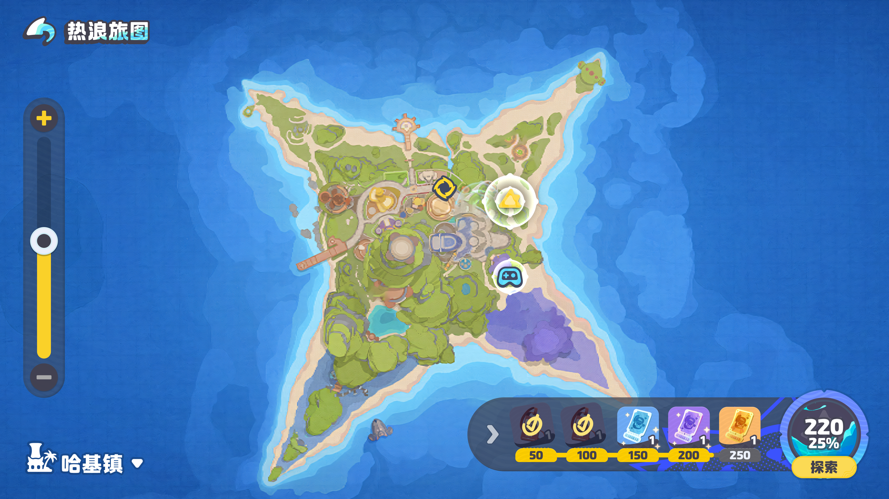
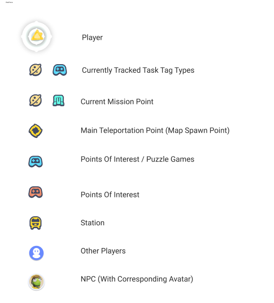
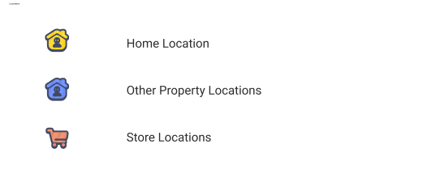
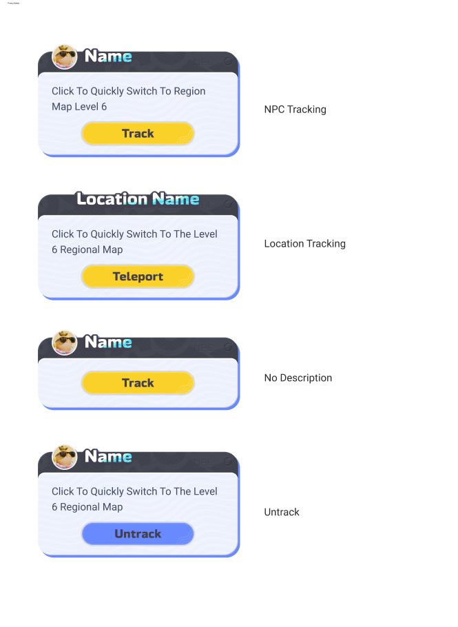
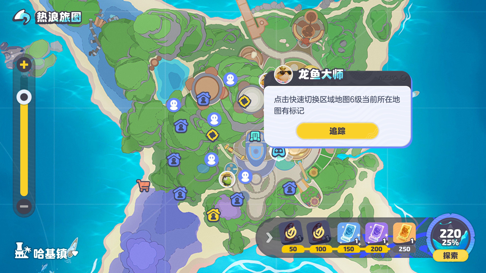

Detail appears only as you look closer
I designed three zoom levels that reveal information progressively. The furthest layer shows only events, places, and key destinations for wayfinding. The middle layer adds NPCs and mission points. The closest layer surfaces resources, friends, and property markers.
Detail appears only as the player looks closer, so the map answers "where do I go" before it ever answers "what is everything here." The same screen serves orientation and detail without ever showing both at once.

// Far — the whole island. Only events, key destinations, and the teleport spawn point.
A marker language, not just markers
I built a full marker language covering the player, other players, NPCs (with avatar), mission points, teleport, points of interest, puzzle games, stations, and location types — home, property, and store. Every marker type carries a distinct meaning at a glance.
I led the UI team to keep every icon legible by shape and silhouette rather than color, so the system stays readable and accessible even where markers cluster tightly. Color reinforces meaning; it never carries it alone.


One popup pattern, every marker
I designed the marker popups as a complete state set: track an NPC, teleport to a location, an untrack state, and a no-description fallback for markers that carry no copy.
Every marker type shares one consistent popup pattern, so interaction stays predictable no matter what the player taps. The action label changes with context — Track, Teleport, Untrack — but the structure never does.


Orientation before information
Three zoom layers replaced a single overloaded view — players orient before they parse detail
10+ marker types unified into one icon language, legible by shape even at full density
Color-independent icons keep the map accessible where markers cluster
One consistent popup pattern across every marker type — interaction stays predictable